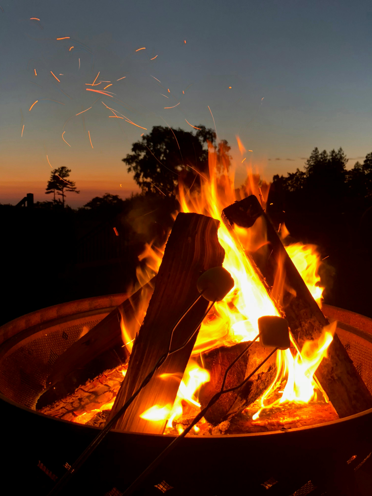

One of my favorite things to do outside is bonfire with my family. It is something we enjoy mostly in the fall. Growing up I would roast marshmellows and cook hotdogs with my sister and cousins. It was always so much fun to run around then caught lightning bugs. I now enjoy getting to teach my little cousins.
